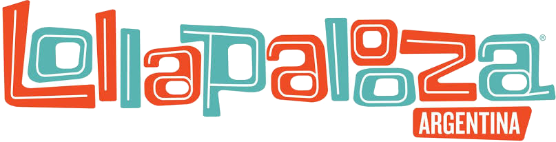

Dj Chimango
Actualmente toca en el Hotel Faena Buenos Aires, Ferona y Festival, con house, nu disco, tropical house y organic house. Con vinilos, en Perro Negro, arma un set ecléctico: rock, soul, funk, disco, samba, bossa, salsa, boogaloo, cumbia chicha, hip hop y algunas otras perlas de la world music.
Su live set es un trío que mixtura la electrónica y lo acústico con aires gitanos y tangueros: Germán Wernicke en guitarra española y percusión africana, Martín Almada en cello, y Dj Chimango en piano Rhodes, sintetizador y voces.
Último disco Brujo y Cazador →Tocó en2018

En pausa
Tema demo — DJ Chimango
0:00